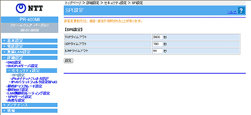

| SPI
を設定します。 設定値を入力したあとに［設定］をクリックすると設定内容が反映されます。 |
| ※「Web設定」画面に表示されているボタンについての説明は こちら |
|  |
 TCPタイムアウト (初期値：3600秒) TCPタイムアウト (初期値：3600秒)
|
|
| TCPセッション確立後、無通信時のセッションの有効時間（秒）を入力します。入力できる値は1〜7200秒です。 |
|
|
UDPタイムアウト (初期値：180秒) |
|
| 無通信時のUDPステート管理の有効時間（秒）を入力します。入力できる値は1〜7200秒です。 |
|
|
ICMPタイムアウト (初期値：60秒) |
|
| 無通信時のICMPステートの管理時間（秒）を入力します。入力できる値は1〜7200秒です。 |
|
- TCPタイムアウト、UDPタイムアウトの設定が短い場合、接続できなくなることがあります。